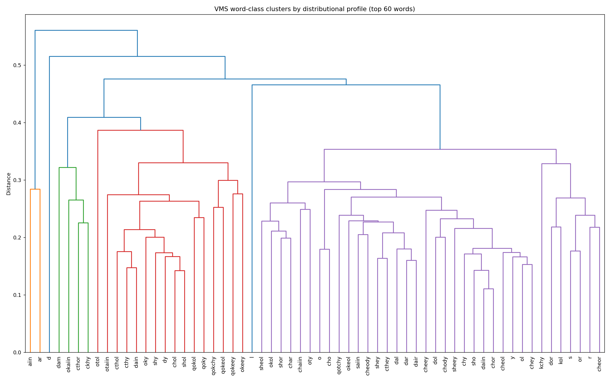
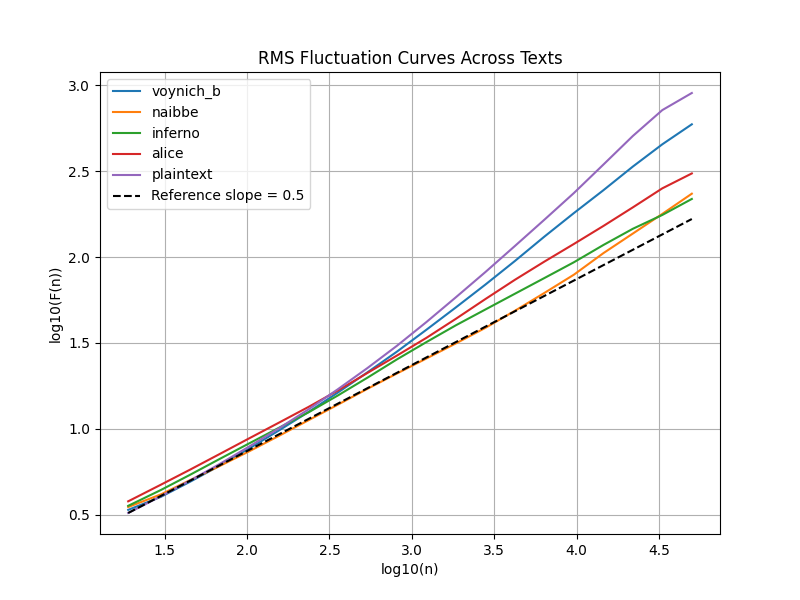

Selected results



The Voynich Manuscript is a 15th-century illustrated book written in a script nobody has ever read. For a century people have tried to break it as a cipher. I approached it from a different angle: instead of asking what it says, I asked what kind of process produced it.
I built a battery of statistical measures that fingerprint the generative process behind a text, chosen specifically so they cannot be fooled by simply matching letter frequencies, which is the trap most claimed decodings fall into. Two results stand out. The manuscript has an unusually rigid word-internal structure that a simple template or Markov process reproduces almost exactly, yet no generic cipher I tested can recreate without secretly building the answer in. And its word choices carry a token-minting signature (around 70% near-unique words and very weak word-to-word dependency) that appears in generated text but in no clean natural language.
Taken together, the structure looks generated rather than enciphered. I stop short of claiming the manuscript is meaningless: whether the word choices encode real content is a separate layer and stays open. But the evidence leans against the straightforward cipher story that has driven most attempts to read it.

